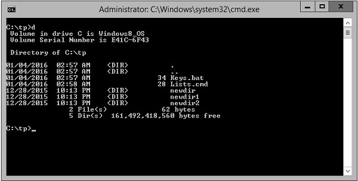

- Batch Script Tutorial
- Batch Script - Home
- Batch Script - Overview
- Batch Script - Environment
- Batch Script - Commands
- Batch Script - Files
- Batch Script - Syntax
- Batch Script - Variables
- Batch Script - Comments
- Batch Script - Strings
- Batch Script - Arrays
- Batch Script - Decision Making
- Batch Script - Operators
- Batch Script - DATE & TIME
- Batch Script - Input / Output
- Batch Script - Return Code
- Batch Script - Functions
- Batch Script - Process
- Batch Script - Aliases
- Batch Script - Devices
- Batch Script - Registry
- Batch Script - Network
- Batch Script - Printing
- Batch Script - Debugging
- Batch Script - Logging
- Batch Script Resources
- Batch Script - Quick Guide
Batch Script - Aliases
Aliases means creating shortcuts or keywords for existing commands. Suppose if we wanted to execute the below command which is nothing but the directory listing command with the /w option to not show all of the necessary details in a directory listing.
Dir /w
Suppose if we were to create a shortcut to this command as follows.
dw = dir /w
When we want to execute the dir /w command, we can simply type in the word dw. The word ‘dw’ has now become an alias to the command Dir /w.
Creating an Alias
Alias are managed by using the doskey command.
Syntax
DOSKEY [options] [macroname=[text]]
Wherein
macroname − A short name for the macro.
text − The commands you want to recall.
Following are the description of the options which can be presented to the DOSKEY command.
| S.No. | Options & Description |
|---|---|
| 1. |
/REINSTALL Installs a new copy of Doskey |
| 2. |
/LISTSIZE = size Sets size of command history buffer. |
| 3. |
/MACROS Displays all Doskey macros. |
| 4. |
/MACROS:ALL Displays all Doskey macros for all executables which have Doskey macros. |
| 5. |
/MACROS:exename Displays all Doskey macros for the given executable. |
| 6. |
/HISTORY Displays all commands stored in memory. |
| 7. |
/INSERT Specifies that new text you type is inserted in old text. |
| 8. |
/OVERSTRIKE Specifies that new text overwrites old text. |
| 9. |
/EXENAME = exename Specifies the executable. |
| 10. |
/MACROFILE = filename Specifies a file of macros to install. |
| 11. |
macroname Specifies a name for a macro you create. |
| 12. |
text Specifies commands you want to record. |
Example
Create a new file called keys.bat and enter the following commands in the file. The below commands creates two aliases, one if for the cd command, which automatically goes to the directory called test. And the other is for the dir command.
@echo off doskey cd = cd/test doskey d = dir
Once you execute the command, you will able to run these aliases in the command prompt.
Output
The following screenshot shows that after the above created batch file is executed, you can freely enter the ‘d’ command and it will give you the directory listing which means that your alias has been created.
Deleting an Alias
An alias or macro can be deleted by setting the value of the macro to NULL.
Example
@echo off doskey cd = cd/test doskey d = dir d=
In the above example, we are first setting the macro d to d = dir. After which we are setting it to NULL. Because we have set the value of d to NULL, the macro d will deleted.
Replacing an Alias
An alias or macro can be replaced by setting the value of the macro to the new desired value.
Example
@echo off doskey cd = cd/test doskey d = dir d = dir /w
In the above example, we are first setting the macro d to d = dir. After which we are setting it to dir /w. Since we have set the value of d to a new value, the alias ‘d’ will now take on the new value.